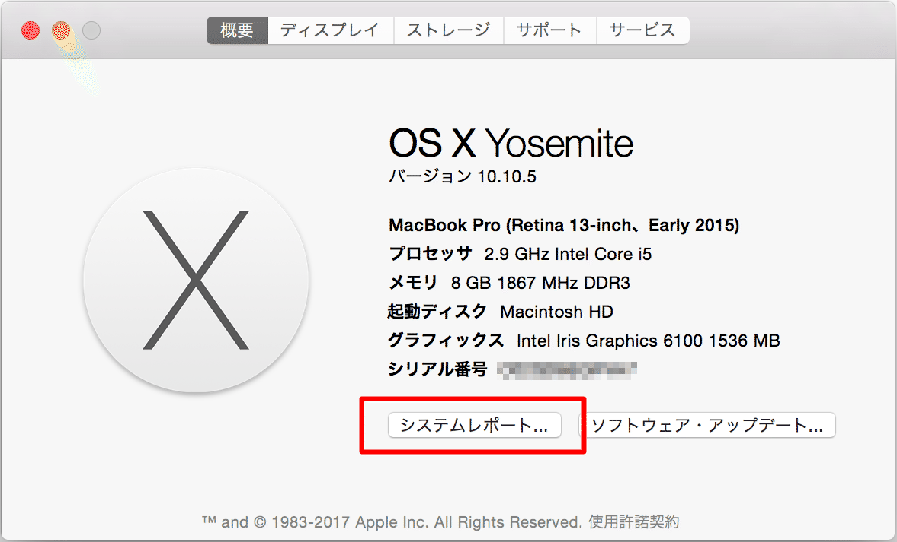

事前確認
作業前に以下を確認する。
OS情報の確認
MacのOS情報を確認するため、以下を実行する。

- 「このMacについて」を選択

- ［システムレポート］押下

「プロセッサ名」と下表を参照し、OSのビット情報を把握する。
| プロセッサ名 | 32 ビット／64 ビット |
|---|---|
| Intel Core Solo | 32 ビット |
| Intel Core Duo | 32 ビット |
| Intel Core 2 Duo | 64 ビット |
| Intel Quad-Core Xeon | 64 ビット |
| Dual-Core Intel Xeon | 64 ビット |
| Quad-Core Intel Xeon | 64 ビット |
| Core i3 | 64 ビット |
| Core i5 | 64 ビット |
| Core i7 | 64 ビット |
※本書では64bit版OSを対象としているため、32bit版OSについては別途考察が必要となる
パッケージマネージャーの確認
パッケージマネージャー Homebrew（ホームブルー）のインストール済み確認を行う。
ターミナルから以下のコマンドを実行し、バージョンが正しく表示されることを確認する。
$ brew --version
バージョン表示で失敗する場合、パッケージマネージャー Homebrew（ホームブルー）のインストールを実施する。
※インストール方法については 公式サイト（URL: https://brew.sh/index_ja）参照。